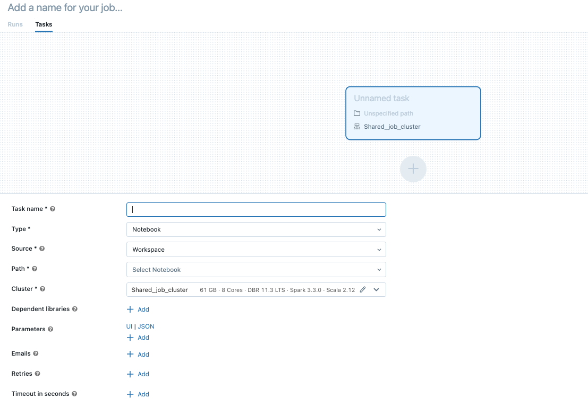

Create and run Databricks Jobs
This article details how to create and run Databricks Jobs using the Jobs UI.
To learn about configuration options for jobs and how to edit your existing jobs, see Configure settings for Databricks jobs.
To learn how to manage and monitor job runs, see View and manage job runs.
To create your first workflow with a Databricks job, see the quickstart.
Important
A workspace is limited to 1000 concurrent task runs. A
429 Too Many Requestsresponse is returned when you request a run that cannot start immediately.The number of jobs a workspace can create in an hour is limited to 10000 (includes “runs submit”). This limit also affects jobs created by the REST API and notebook workflows.
Create and run jobs using the CLI, API, or notebooks
To learn about using the Databricks CLI to create and run jobs, see What is the Databricks CLI?.
To learn about using the Jobs API to create and run jobs, see Jobs in the REST API reference.
To learn how to run and schedule jobs directly in a Databricks notebook, see Create and manage scheduled notebook jobs.
Create a job
Do one of the following:
Click
 Workflows in the sidebar and click
Workflows in the sidebar and click  .
.In the sidebar, click
 New and select Job.
New and select Job.
The Tasks tab appears with the create task dialog.
Replace Add a name for your job… with your job name.
Enter a name for the task in the Task name field.
In the Type drop-down menu, select the type of task to run. See Task type options.
Configure the cluster where the task runs. In the Cluster drop-down menu, select either New job cluster or Existing All-Purpose Clusters.
New Job Cluster: Click Edit in the Cluster drop-down menu and complete the cluster configuration.
Existing All-Purpose Cluster: Select an existing cluster in the Cluster drop-down menu. To open the cluster on a new page, click the
 icon to the right of the cluster name and description.
icon to the right of the cluster name and description.
To learn more about selecting and configuring clusters to run tasks, see Use Databricks compute with your jobs.
To add dependent libraries, click + Add next to Dependent libraries. See Configure dependent libraries.
You can pass parameters for your task. For information on the requirements for formatting and passing parameters, see Pass parameters to a Databricks job task.
To optionally receive notifications for task start, success, or failure, click + Add next to Emails. Failure notifications are sent on initial task failure and any subsequent retries. To filter notifications and reduce the number of emails sent, check Mute notifications for skipped runs, Mute notifications for canceled runs, or Mute notifications until the last retry.
To optionally configure a retry policy for the task, click + Add next to Retries. See Configure a retry policy for a task.
To optionally configure an expected duration or a timeout for the task, click + Add next to Duration threshold. See Configure an expected completion time or a timeout for a task.
Click Create.
To add another task, click in the DAG view. A shared cluster option is provided if you have configured a New Job Cluster for a previous task. You can also configure a cluster for each task when you create or edit a task. To learn more about selecting and configuring clusters to run tasks, see Use Databricks compute with your jobs.
You can optionally configure job-level settings such as notifications, job triggers, and permissions. See Edit a job. You can also configure job-level parameters that are shared with the job’s tasks. See Add parameters for all job tasks.
Task type options
The following are the task types you can add to your Databricks job and available options for the different task types:
Notebook: In the Source drop-down menu, select a location for the notebook; either Workspace for a notebook located in a Databricks workspace folder or Git provider for a notebook located in a remote Git repository.
Workspace: Use the file browser to find the notebook, click the notebook name, and click Confirm.
Git provider: Click Edit and enter the Git repository information. See Use a notebook from a remote Git repository.
Note
Total notebook cell output (the combined output of all notebook cells) is subject to a 20MB size limit. Additionally, individual cell output is subject to an 8MB size limit. If total cell output exceeds 20MB in size, or if the output of an individual cell is larger than 8MB, the run is canceled and marked as failed.
If you need help finding cells near or beyond the limit, run the notebook against an all-purpose cluster and use this notebook autosave technique.
JAR: Specify the Main class. Use the fully qualified name of the class containing the main method, for example,
org.apache.spark.examples.SparkPi. Then click Add under Dependent Libraries to add libraries required to run the task. One of these libraries must contain the main class.To learn more about JAR tasks, see Use a JAR in a Databricks job.
Spark Submit: In the Parameters text box, specify the main class, the path to the library JAR, and all arguments, formatted as a JSON array of strings. The following example configures a spark-submit task to run the
DFSReadWriteTestfrom the Apache Spark examples:["--class","org.apache.spark.examples.DFSReadWriteTest","dbfs:/FileStore/libraries/spark_examples_2_12_3_1_1.jar","/discover/databricks-datasets/README.md","/FileStore/examples/output/"]
Important
There are several limitations for spark-submit tasks:
You can run spark-submit tasks only on new clusters.
Spark-submit does not support cluster autoscaling. To learn more about autoscaling, see Cluster autoscaling.
Spark-submit does not support Databricks Utilities (dbutils) reference. To use Databricks Utilities, use JAR tasks instead.
If you are using a Unity Catalog-enabled cluster, spark-submit is supported only if the cluster uses the assigned access mode. Shared access mode is not supported.
Spark Streaming jobs should never have maximum concurrent runs set to greater than 1. Streaming jobs should be set to run using the cron expression
"* * * * * ?"(every minute). Since a streaming task runs continuously, it should always be the final task in a job.
Python script: In the Source drop-down menu, select a location for the Python script, either Workspace for a script in the local workspace, DBFS for a script located on DBFS, or Git provider for a script located in a Git repository. In the Path textbox, enter the path to the Python script:
Workspace: In the Select Python File dialog, browse to the Python script and click Confirm. Your script must be in a Databricks repo.
DBFS: Enter the URI of a Python script on DBFS or cloud storage; for example,
dbfs:/FileStore/myscript.py.Git provider: Click Edit and enter the Git repository information. See Use Python code from a remote Git repository.
Delta Live Tables Pipeline: In the Pipeline drop-down menu, select an existing Delta Live Tables pipeline.
Important
You can use only triggered pipelines with the Pipeline task. Continuous pipelines are not supported as a job task. To learn more about triggered and continuous pipelines, see Continuous vs. triggered pipeline execution.
Python Wheel: In the Package name text box, enter the package to import, for example,
myWheel-1.0-py2.py3-none-any.whl. In the Entry Point text box, enter the function to call when starting the Python wheel. Click Add under Dependent Libraries to add libraries required to run the task.SQL: In the SQL task drop-down menu, select Query, Dashboard, Alert, or File.
Note
The SQL task requires Databricks SQL and a serverless or pro SQL warehouse.
Query: In the SQL query drop-down menu, select the query to execute when the task runs.
Dashboard: In the SQL dashboard drop-down menu, select a dashboard to be updated when the task runs.
Alert: In the SQL alert drop-down menu, select an alert to trigger for evaluation.
File: In the Source drop-down menu, select Git provider, click Edit or Add a git reference, and enter details for the Git repository. See Use SQL queries from a remote Git repository.
In the SQL warehouse drop-down menu, select a serverless or pro SQL warehouse to run the task.
dbt: See Use dbt transformations in a Databricks job for a detailed example of how to configure a dbt task.
Run Job: In the Job drop-down menu, select a job to be run by the task. To search for the job to run, start typing the job name in the Job menu.
Important
You should not create jobs with circular dependencies when using the
Run Jobtask or jobs that nest more than threeRun Jobtasks. Circular dependencies areRun Jobtasks that directly or indirectly trigger each other. For example, Job A triggers Job B, and Job B triggers Job A. Databricks does not support jobs with circular dependencies or that nest more than threeRun Jobtasks and might not allow running these jobs in future releases.If/else: To learn how to use the
If/else conditiontask, see Add branching logic to your job with the If/else condition task.
Pass parameters to a Databricks job task
You can pass parameters to many of the job task types. Each task type has different requirements for formatting and passing the parameters.
To access information about the current task such as the task name, or pass context about the current run between job tasks such as the start time of the job or the identifier of the current job run, use dynamic value references. To view a list of available dynamic value references, click Browse dynamic values.
If job parameters are configured on the job a task belongs to, those parameters are displayed when you add task parameters. If job and task parameters share a key, the job parameter takes precedence. A warning is shown in the UI if you attempt to add a task parameter with the same key as a job parameter. To pass job parameters to tasks that are not configured with key-value parameters such as JAR or Spark Submit tasks, format arguments as {{job.parameters.[name]}}, replacing [name] with the key that identifies the parameter.
Notebook: Click Add and specify the key and value of each parameter to pass to the task. You can override or add additional parameters when you manually run a task using the Run a job with different parameters option. Parameters set the value of the notebook widget specified by the key of the parameter.
JAR: Use a JSON-formatted array of strings to specify parameters. These strings are passed as arguments to the main method of the main class. See Configuring JAR job parameters.
Spark Submit: Parameters are specified as a JSON-formatted array of strings. Conforming to the Apache Spark spark-submit convention, parameters after the JAR path are passed to the main method of the main class.
Python Wheel: In the Parameters drop-down menu, select Positional arguments to enter parameters as a JSON-formatted array of strings, or select Keyword arguments > Add to enter the key and value of each parameter. Both positional and keyword arguments are passed to the Python wheel task as command-line arguments. To see an example of reading arguments in a Python script packaged in a Python wheel, see Use a Python wheel in a Databricks job.
Run Job: Enter the key and value of each job parameter to pass to the job.
Python script: Use a JSON-formatted array of strings to specify parameters. These strings are passed as arguments and can be read as positional arguments or parsed using the argparse module in Python. To see an example of reading positional arguments in a Python script, see Step 2: Create a script to fetch GitHub data.
SQL: If your task runs a parameterized query or a parameterized dashboard, enter values for the parameters in the provided text boxes.
Copy a task path
Certain task types, for example, notebook tasks, allow you to copy the path to the task source code:
Click the Tasks tab.
Select the task containing the path to copy.
Click next to the task path to copy the path to the clipboard.
Create a job from an existing job
You can quickly create a new job by cloning an existing job. Cloning a job creates an identical copy of the job, except for the job ID. On the job’s page, click More … next to the job’s name and select Clone from the drop-down menu.
Create a task from an existing task
You can quickly create a new task by cloning an existing task:
On the job’s page, click the Tasks tab.
Select the task to clone.
Click and select Clone task.
Delete a job
To delete a job, on the job’s page, click More … next to the job’s name and select Delete from the drop-down menu.
Delete a task
To delete a task:
Click the Tasks tab.
Select the task to be deleted.
Click and select Remove task.
Run a job
Click
Workflows in the sidebar.Select a job and click the Runs tab. You can run a job immediately or schedule the job to run later.
If one or more tasks in a job with multiple tasks are not successful, you can re-run the subset of unsuccessful tasks. See Re-run failed and skipped tasks.
Run a job immediately
To run the job immediately, click  .
.
Tip
You can perform a test run of a job with a notebook task by clicking Run Now. If you need to make changes to the notebook, clicking Run Now again after editing the notebook will automatically run the new version of the notebook.
Run a job with different parameters
You can use Run Now with Different Parameters to re-run a job with different parameters or different values for existing parameters.
Note
You cannot override job parameters if a job that was run before the introduction of job parameters overrode task parameters with the same key.
Click next to Run Now and select Run Now with Different Parameters or, in the Active Runs table, click Run Now with Different Parameters. Enter the new parameters depending on the type of task. See Pass parameters to a Databricks job task.
Click Run.
Run a job as a service principal
By default, jobs run as the identity of the job owner. This means that the job assumes the permissions of the job owner. The job can only access data and Databricks objects that the job owner has permissions to access. You can change the identity that the job is running as to a service principal. Then, the job assumes the permissions of that service principal instead of the owner. Workspace admins can also change the identity that the job is running as to a different user in the workspace.
To change the Run as setting you need to have either the Can Manage or Is Owner permission on the job. Workspace users can set the Run as setting to themselves or to any service principal in the workspace that they have the Service Principal User role on. Workspace admins can set the Run as setting to any workspace user or to any service principal in the workspace that they have the Service Principal User role on. For more information, see Roles for managing service principals and Jobs access control.
To change the run as field, do the following:
In the sidebar, click
Workflows.In the Name column, click the job name.
In the Job details side panel, click the pencil icon next to the Run as field.
Search for and select the service principal.
Click Save.
You can also list the service principals that you have the User role on using the Workspace Service Principals API. For more information, see List the service principals that you can use.
Run a job on a schedule
You can use a schedule to automatically run your Databricks job at specified times and periods. See Add a job schedule.
Run a continuous job
You can ensure there’s always an active run of your job. See Run a continuous job.
Run a job when new files arrive
To trigger a job run when new files arrive in an external location, use a file arrival trigger.
What if my job cannot run because of concurrency limits?
To prevent runs of a job from being skipped because of concurrency limits, you can enable queueing for the job. When queueing is enabled, if resources are not available for a job run, the run is queued for up to 48 hours. When capacity is available, the job run is dequeued and run. Queued runs are displayed in the runs list for the job and the recent job runs list.
A run is queued when one of the following limits is reached:
The maximum concurrent active runs in the workspace.
The maximum concurrent
Run Jobtask runs in the workspace.The maximum concurrent runs of the job.
Queueing is a job-level property that queues runs only for that job.
To enable queueing, click the Queue toggle in the Job details side panel.